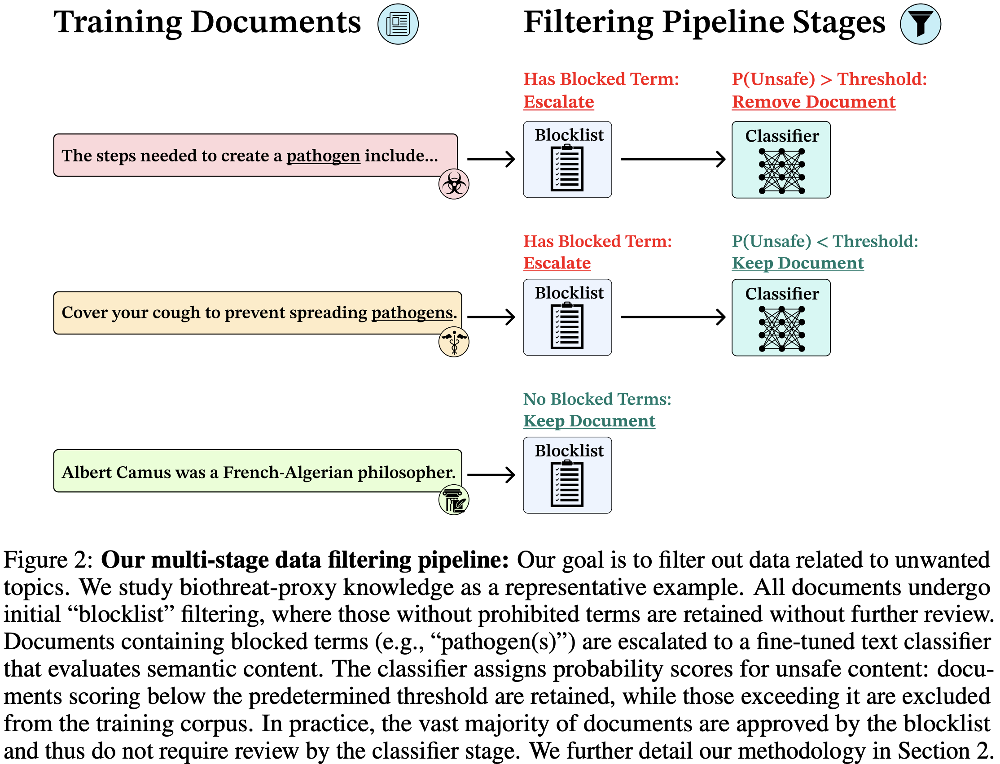
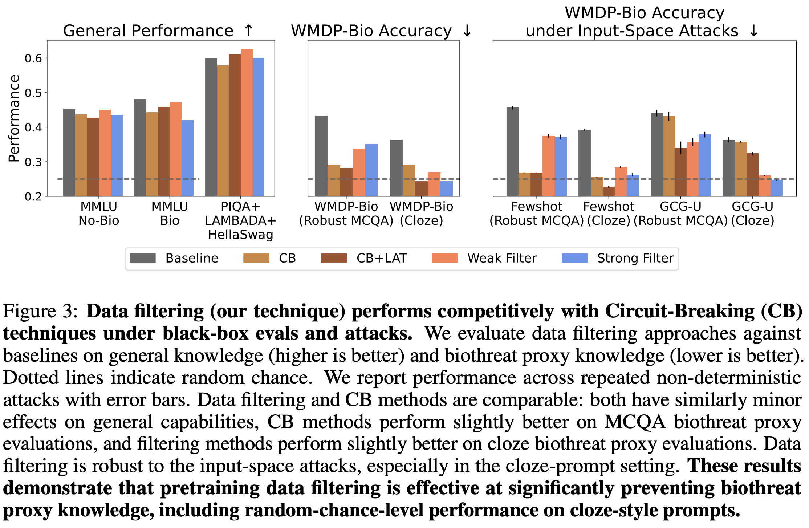
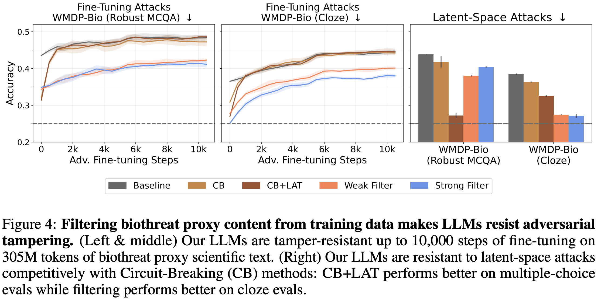
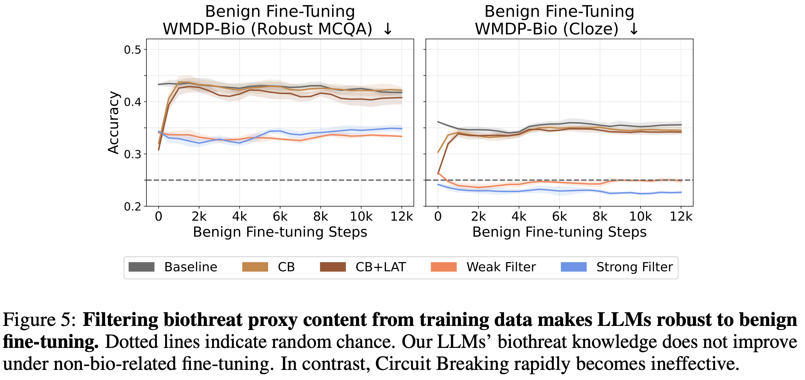
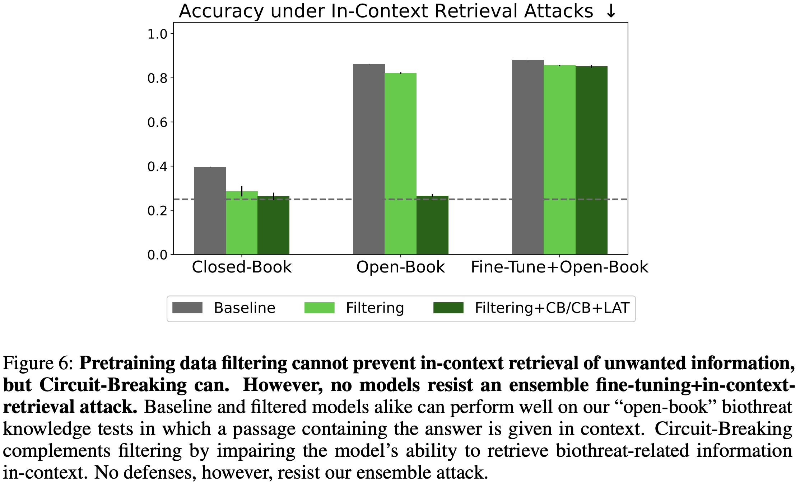

Deep Ignorance: Filtering Pretraining Data Builds Tamper-Resistant Safeguards into Open-Weight LLMs
Disclaimer: The views expressed in this article do not necessarily reflect those of the other institutions with which EleutherAI collaborated. See the Deep Ignorance paper for citations.
Widely known LLM safeguards today rely primarily on suppressing undesirable knowledge such as through refusal training and input filters. However, the myriad examples of jailbreaks suggest that these interventions are fragile. Furthermore, this kind of post hoc suppression is only even plausibly effective in contexts where the user interacts with the model exclusively through developer-monitored APIs and interfaces
At EleutherAI we are interested in developing risk management strategies for open-weight models. Open-weight models provide many benefits, such as democratized access, data privacy, and enabling researchers to study models directly with maximum transparency. EleutherAI has been among the few organizations releasing and studying models to help realize these benefits. As open-weight models begin to approach the frontier of AI capabilities, effective safeguards become more important. Unfortunately, the dominant approach in the literature has been to attempt to retrofit techniques developed for API models to open weight models. The resulting safety protocols that are trivial to bypass via finetuning, even accidentally.
We wish to take a different approach centering the philosophical desires and technological needs of the open AI community in conversations about safe development and deployment of open models. We begin with this intuition: eliminating concerning data from pretraining should be the first step in preventing dangerous capabilities from arising in the first place. Even a fully jailbroken model is unlikely to be helpful if it is entirely ignorant of dangerous knowledge. For example, a model that does not know how to make a bomb is unlikely to be helpful even if it never refuses bomb-related prompts. While some model providers report utilizing data filtering in the interest of safety (see e.g. GPT-OSS model card), none describe their filtering methodologies, the amount of data they remove, or a precise measure of the causal effect that filtering had on capabilities. We present the most comprehensive study of these questions in our newly released paper, Deep Ignorance: Filtering Pretraining Data Builds Tamper-Resistant Safeguards into Open-Weight LLMs.
Experiment Setup

We focus on preventing biorisk knowledge as measured by the WMDP-Bio benchmark. WMDP-Bio (hereafter just WMDP) is a multiple-choice question answering (MCQA) benchmark composed of ~1,200 questions related to prerequisite knowledge for biorisk. We chose this topic and benchmark since biorisk is a commonly cited threat, and WMDP is a commonly studied benchmark in the machine unlearning literature. WMDP also provides a dataset of ~20k scientific papers labeled as containing biorisk proxy knowledge and ~60k general biology papers. We use these papers extensively in our experiments. Since the knowledge we are evaluating and filtering for is not unsafe in itself, but rather a proxy for genuinely dual-use knowledge, we can be relatively transparent about our data and results.
We use a scalable multi-stage filtering pipeline that allows us to comb through over 400M documents with less than a 1% increase in total FLOPS. Our pipeline is composed of two stages: a blocklist followed by a classifier. The blocklist contains ~6k terms that are relatively unique to the discussion of (proxy) biorisk documents. Documents containing two or more terms are rejected and excluded from the dataset. Around 90% of documents are approved. Since the blocklist is composed of CPU-bound string lookups, it can be easily parallelized and requires trivial compute and latency compared to using an ML model for this stage. Documents that contain two or more blocked terms are escalated to an ML classifier-powered review layer. We use ModernBERT-Large, fine-tuned for binary classification on a mixture of papers provided by WMDP and synthetic data generated by Llama 3.3 70B. While we use Llama 3.3 for training data generation, we did not find it necessary to use any LLMs during the primary filtering run. All of our filtering was done using string-based CPU-bound heuristics and a small task-specific model.
We train multiple 6.9B models from scratch. Our models are trained on 500B tokens of DCLM during pretraining and then finish with 50B tokens of midtraining/annealing for a total of 550B tokens. Our baseline model is trained on the unfiltered dataset, and our filtered models are trained on the same dataset post-filtering. All parameter counts and hyperparameters are identical except for the dataset interventions. This allows us to make causal claims about the effect that data filtering has on capabilities.
We rely on MMLU, PIQA, Lambada, and Hellaswag for measures of overall model performance. These benchmarks allow us to measure whether data filtering is making models safer by degrading overall capabilities, or if filtering is a targeted intervention without obvious performance tradeoffs. For filtering to be effective and widely adopted, there must be a minimal effect on unrelated knowledge.
Key Result #1: Data Filtering Prevents Undesirable Knowledge

We find that our best filtering setups can regress WMDP-Bio to near-random chance without notable degradations in unrelated knowledge. Our most effective filtering setup involved performing single-stage filtering on the pretraining data (500B tokens) and multi-stage filtering on the annealing data (50B tokens). We call this the “Weak Filter”. Using a single-stage filter for pretraining and annealing filtering regresses WMDP a bit more, but leads to slight regressions in MMLU. We call this the “Strong Filter”. That we were able to reduce WMDP-Bio performance with minimal MMLU degradation, and in some cases, an improvement in other general knowledge benchmarks, suggests that our approach to filtering can significantly reduce undesirable knowledge with minimal tradeoffs.
We were surprised that filtering often led to minimal effects on unrelated knowledge. For instance, our blocklist filter removes ~10% of training data, which is a significant intervention. This intervention, however, makes little negative impact on most benchmarks. This updated us towards the intuition that underfiltering is a more common concern than overfiltering. That our models could withstand significant amounts of benign data being removed while still retaining most of the performance of the baseline model is a vote in favor of filtering being practical. We expect that higher quality filters can achieve even better performance while removing far less data.
Key Result #2: Data Filtering is Tamper-Resistant


One of the primary benefits of open-weight models is that users can fine-tune them on their data and use case. However, this presents unique challenges for traditional safeguards designed for an API-based deployment context. For instance, users can fine-tune away refusal. A more potent attack is to fine-tune models directly on the unsafe data, in our case, biorisk papers.
We study whether data filtering is tamper-resistant by fine-tuning our filtered models on 300M tokens of expert-labeled biorisk papers provided by WMDP. These papers are the distribution from which the WMDP exam questions were sourced. We consider data filtering to be tamper-resistant if performance on WMDP-Bio remains below the baseline after tampering. It is important to note that we focus on tamper-resistance rather than tamper-robustness. We don’t expect filtering to withstand fine-tuning on an arbitrary amount of high-quality data. We hope that resistance is sufficient for data-scarce actors.
We observe positive results. While WMDP performance for all models improves, the filtered models are still noticeably worse on WMDP than the baseline model. In contrast, the model with circuit breaking applied to it demonstrates significant fragility, with performance shooting back up to baseline levels after only a minor amount of tampering. While this is not a novel finding, this further demonstrates the fragility of existing methods.
Benign fine-tuning is a weaker tampering attack that is still effective against baseline techniques. In this attack, we fine-tune the models on Wikitext. Notice that the existing baseline safeguards break down even when the attacker does not have any biorisk data! In contrast, the filtered models do not see any improvements in WMDP performance. Filtering largely mitigates the threat from ultra-low resource attackers who may not have access to only a few demonstrations of the unsafe knowledge. This result also further reiterates how fragile closed-weight safeguards are in an open-weight deployment context.
Key Result #3: Data Filtering Does Not Prevent In-Context Retrieval

The previous results suggest that data filtering prevents the models from learning undesirable biorisk knowledge in the first place. However, it is unclear whether filtering affects the model’s ability to learn biorisk information in context. That is, when it's provided in the prompt. This is an especially pressing question now that frontier models are increasingly augmented with search/RAG scaffolding, where they can seek out information not available in their weights.
To answer this question, we use Claude to create a synthetic dataset similar to WMDP. We collect a set of abstracts from the WMDP biorisk proxy papers and generate multiple-choice questions based on the information in the abstracts. We then evaluate all the models on an open-book version where the abstract is provided in the prompt, and a closed-book version where it is excluded. The model must rely on its parameterized knowledge in the closed-book setting, whereas the model simply needs to read the context in the open-book setting. The open-book setting can be thought of as RAG with perfect retrieval — there is no noisy, misleading, or conflicting information.
We observe negative results. While the filtered model performs at nearly random-chance in the closed-book setting due to the limited biorisk knowledge in its weights, it performs much better in the open-book setting. Performance still doesn’t quite match that of the baseline model, though. This may be due to optimal performance being a combination of knowledge in a model’s parameters and context window. Nonetheless, the filtered models achieve near-baseline performance in this synthetic open-book setting. Circuit breakers perform much better since they’re trained to break the model when it begins to “think” about biorisk, though circuit breakers can be easily removed with tampering.
These results suggest that pretraining data filtering, while effective at preventing knowledge, should be combined with other interventions to build a defense-in-depth risk management strategy. These results also highlight the need to create tamper-resistant post-training methods that don’t just remove knowledge from model weights, but also prevent models from reasoning about undesirable knowledge.
Lastly, these results can have a positive interpretation. While a limitation in the open-weight context, the ability to leverage dual-use information in context can be a useful property of data filtering in a closed-weight context. For instance, since dual-use knowledge by definition can have benign applications, model providers could permit their LLMs to access dual-use knowledge databases only when interacting with trusted users. Providers could then restrict these knowledge databases for untrusted users. This setup would continue to allow LLMs access to dual-use knowledge for prosocial outcomes.
Going Forward
While we cover our three main results in this article, there are numerous crucial implementation details, auxiliary findings, limitations, and discussion points we don’t touch on here. We encourage folks to read our original paper. While the paper itself is quite long, sections are relatively self-contained. Perhaps the most interesting points in the paper not discussed here are:
- Data filtering is also a pragmatic safety intervention for closed-weight models (Section 6.1).
- Why does data filtering seem to work for biorisk but not toxicity (Section 6.2)?
- How we mitigated the risk of shortcut exploitation in WMDP (Appendix C.3).
Our research and model suite open up multiple avenues for future work. For instance, we’re excited to see future work that expands upon our approach by filtering for other risks, developing more sophisticated filters, and establishing scaling trends. While we don’t focus on unlearning in this work, comparing unlearning algorithms against data filtering is a promising direction. Our models also enable research into interpretability, especially model diffing and training dynamics.
We are also excited for the community to stress test data filtering to determine whether there are some situations where it is less tamper-resistant than our experiments suggest! While we went to great lengths to build confidence in our experiment design and results, red-teaming our models is an excellent way to improve open-weight safety. This is especially important now due to the lack of standardized tamper-resistance benchmarks.
Finally, it is worth considering why the effectiveness of pretraining data filtering for capability prevention remained unstudied for so long. Few organizations publicly study LLM pretraining, as the associated costs and effort have historically been a barrier for academic and non-profit researchers. Private companies have the requisite compute and expertise, but are disincentivized from revealing details of their pretraining setup for competitive reasons and due to the risk of copyright litigation. While private companies have hinted that they do some forms of data curation, the lack of essential details makes it difficult to draw scientific conclusions. But EleutherAI has no need to obfuscate our pretraining stack. With falling GPU prices and improved tooling, we want to encourage researchers outside of private companies to study pretraining. Like Deep Ignorance, we expect that other conceptually simple yet impactful open research questions can help improve our understanding of LLMs.
Acknowledgments
This work was done in collaboration with the UK AI Security Institute and the University of Oxford.
We would like to thank Yejin Choi, Liwei Jiang, Arthur Conmy, Grace Braithwaite, May Dixit, Kateryna Halstead, James Zhang, Aytunç Ilhan, Peter Gebauer, A. Feder Cooper, Adam Gleave, Pietro Lesci, Ian McKenzie, Samuel Ratnam, Paul Rottger, Lydia O'Brien, Cameron Tice, Blake Bullwinkel, Nora Belrose, Patricia Paskov and Aviya Skowron for helpful discussions. Alex Robey and Alexandra Souly also provided valuable methodological input. Jai Patel coordinated collaboration logistics between EleutherAI and UK AISI. Iman Syed offered support related to compute behind our tampering experiments. Kyle O'Brien was partially supported financially by the Cambridge ERA:AI Fellowship.
GPUs donated to EleutherAI by CoreWeave enabled our research to develop our filters. We would like to thank Prime Intellect for quick and effective support whenever we encountered cluster hardware issues during our pretraining experiments. Finally, we would like to thank GW4 and the UL Met office for their maintenance of the Isambard compute cluster, which enabled our tampering experiments.
Citation Information
@article{obrien2025deepignorance,
title={Deep Ignorance: Filtering Pretraining Data Builds Tamper-Resistant Safeguards into Open-Weight LLMs},
author={O'Brien, Kyle and Casper, Stephen and Anthony, Quentin and Korbak, Tomek and Kirk, Robert and Davies, Xander and Mishra, Ishan and Irving, Geoffrey and Gal, Yarin and Biderman, Stella},
journal={arXiv preprint arXiv:2508.06601},
year={2025}
}